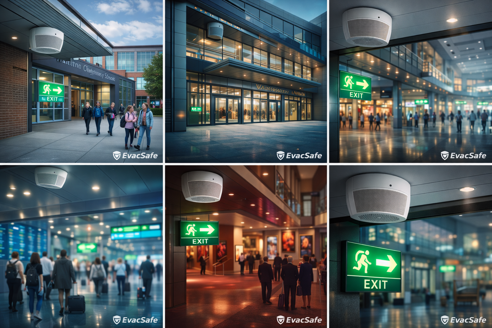

Projecten
Voorbeelden van werk, bewust zonder herkenbare locatiegegevens. Focus op aanpak, techniek en resultaat.
| Projecttype | Uitdaging | Oplossing | Resultaat |
|---|---|---|---|
| Winkelcentrum, vervanging | Oud systeem, minimale downtime, koppeling met BMC. | Prefab voorbereiding, ombouw in één dag, scenario's getest met beheer. | Werkend opgeleverd, duidelijke rapportage en beheerinstructie. |
| Publiek gebouw, modernisering | Legacy bekabeling en uitbreidingen door de jaren heen. | Herindeling zones, gecontroleerde migratie, verbeterde bewaking. | Meer grip op storingen, betere spraakverstaanbaarheid. |
| Onderwijs, nieuwe installatie | Veel looproutes, verschillende gebruiksmomenten, duidelijke instructie nodig. | Zoneplan op basis van compartimenten, heldere gesproken berichten. | Logische ontruiming, eenvoudige bediening voor BHV. |

 © EvacSafe
© EvacSafe